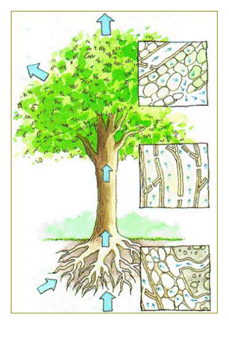
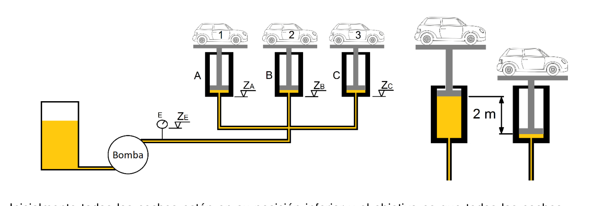
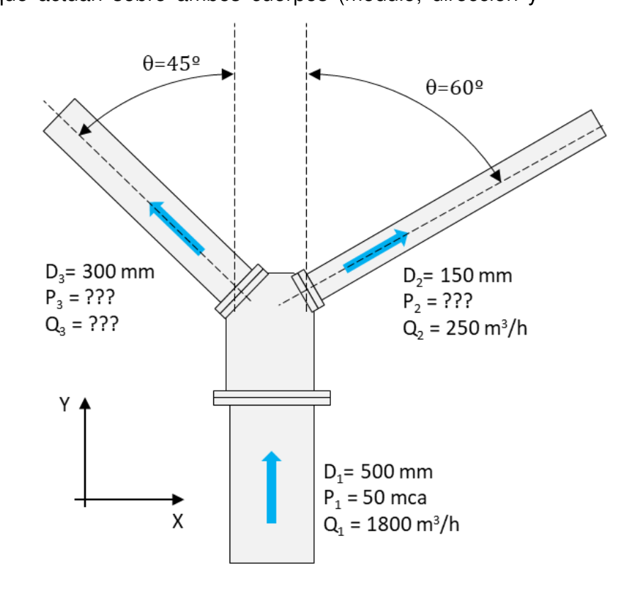
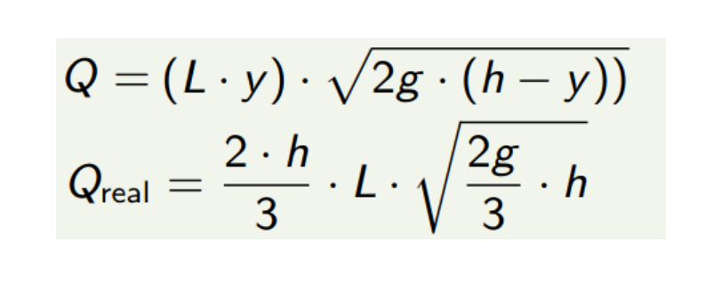
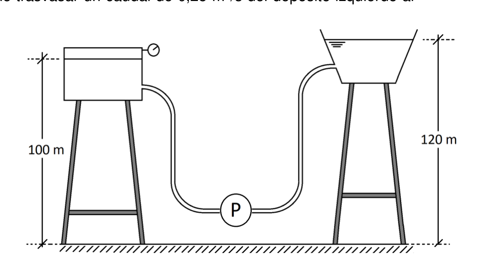

Ejercicio 1 · Capilaridad — diámetro de los vasos de la savia en un árbol de 30 m

| Variable | Valor | Notas |
|---|---|---|
| $h$ | $30\ \text{m}$ | Altura a alcanzar por la savia |
| $\gamma$ | $9810\ \text{N/m}^3$ | Peso específico de la savia |
| $\sigma$ | $73{,}49\ \text{dyn/cm} = 73{,}49 \times 10^{-3}\ \text{N/m}$ | Tensión superficial a 20°C |
| $\theta$ | $\approx 0°$ | Ángulo de contacto (adhesión total) |
La capilaridad es el fenómeno por el cual un líquido asciende (o desciende) en un tubo de pequeño diámetro debido a la interacción entre las fuerzas de adhesión líquido-sólido y la tensión superficial del líquido. El equilibrio entre la fuerza de tracción de la tensión superficial en el menisco ($F = \pi D \sigma \cos\theta$) y el peso de la columna de fluido elevada ($W = \gamma \cdot \pi D^2/4 \cdot h$) define el diámetro máximo del vaso capilar. Con $\theta = 0$ (mojabilidad perfecta), se obtiene el diámetro máximo para un ascenso dado.
Ejercicio 2 · Sistema de elevación oleohidráulico de tres coches

| Cilindro | Coche | Masa | Diámetro | Área |
|---|---|---|---|---|
| A | 1 | $1650\ \text{kg}$ | $\varnothing_A = 10\ \text{cm}$ | $A_A = \pi/4 \times 0{,}1^2 = 7{,}854 \times 10^{-3}\ \text{m}^2$ |
| B | 2 | $1750\ \text{kg}$ | $\varnothing_B = 8\ \text{cm}$ | $A_B = \pi/4 \times 0{,}08^2 = 5{,}027 \times 10^{-3}\ \text{m}^2$ |
| C | 3 | $1900\ \text{kg}$ | $\varnothing_C = 15\ \text{cm}$ | $A_C = \pi/4 \times 0{,}15^2 = 1{,}767 \times 10^{-2}\ \text{m}^2$ |
| Variable | Valor |
|---|---|
| $\gamma_{\text{aceite}}$ | $0{,}85 \times 9800 = 8330\ \text{N/m}^3$ |
| $z_E$ (manómetro) | $0{,}5\ \text{m}$ |
| $z_{\text{cilindros}}$ | $1{,}5\ \text{m}$ |
| Carrera | $2\ \text{m}$ |
| $\Delta z = z_{\text{cil}} - z_E$ | $1{,}0\ \text{m}$ |
Todos los cilindros están conectados a la misma línea de presión. La bomba irá aumentando la presión hasta superar el umbral del primer cilindro (el que necesita menos presión para vencer el peso de su coche). En ese momento, ese cilindro sube completamente mientras los demás permanecen estáticos. Luego la presión sigue aumentando hasta el siguiente umbral, y así sucesivamente. No pueden subir a la vez porque los umbrales de presión son distintos.
No subirán a la vez. La presión necesaria en cada cilindro es diferente (depende de $m_i$ y $A_i$). La bomba solo puede proporcionar una presión en cada instante; el pistón con menor umbral se moverá primero.
2º — Coche 1 (cilindro A): $P_A = 20{,}59\ \text{bar}$
3º — Coche 2 (cilindro B): $P_B = 34{,}13\ \text{bar}$ (mayor presión)
Al fin de carrera el pistón ha recorrido 2 m, por lo que el cilindro contiene una columna de aceite de 2 m. La presión en la base del cilindro debe soportar el peso del coche más el peso de esa columna interna:
$$P_{\text{base}} = \frac{m_i g}{A_i} + \gamma_{\text{aceite}} \times \text{carrera} = \frac{m_i g}{A_i} + 8330 \times 2{,}0$$El manómetro E está $\Delta z = z_{\text{cil}} - z_E = 1{,}5 - 0{,}5 = 1{,}0\ \text{m}$ por debajo. La columna hidrostática total (interior cilindro + línea hasta E):
$$\Delta P_{\text{total}} = \gamma_{\text{aceite}} \times (\text{carrera} + \Delta z) = 8330 \times (2{,}0 + 1{,}0) = 8330 \times 3{,}0 = 24\,990\ \text{Pa} \approx 0{,}250\ \text{bar}$$| Fin de carrera | $P_{\text{umbral}} = m_i g/A_i$ | $P_E = P_{\text{umbral}} + 0{,}250\ \text{bar}$ |
|---|---|---|
| Coche 3 (C) — 1º | $10{,}54\ \text{bar}$ | $\mathbf{10{,}79\ \text{bar}}$ |
| Coche 1 (A) — 2º | $20{,}59\ \text{bar}$ | $\mathbf{20{,}84\ \text{bar}}$ |
| Coche 2 (B) — 3º | $34{,}13\ \text{bar}$ | $\mathbf{34{,}37\ \text{bar}}$ |
Ejercicio 3 · Prisma triangular equilátero y esfera sumergidos en dos fluidos — equilibrio y fuerzas hidrostáticas
| Variable | Valor | Notas |
|---|---|---|
| $H$ | $10\ \text{m}$ | Profundidad total del sistema de fluidos |
| $h$ | $8\ \text{m}$ | Profundidad de interfaz entre fluidos 1 y 2 |
| $L$ | $1\ \text{m}$ | Lado del triángulo equilátero |
| $b$ | $3\ \text{m}$ | Anchura del prisma (dim. perpendicular) |
| $\varnothing$ | $1{,}1\ \text{m}$ | Diámetro de la esfera |
| $s_1$ | $1{,}4$ → $\gamma_1 = 13{.}720\ \text{N/m}^3$ | Fluido superior |
| $s_2$ | $2{,}1$ → $\gamma_2 = 20{.}580\ \text{N/m}^3$ | Fluido inferior |
| $\rho_{\text{barra}}$ | $873{,}76\ \text{kg/m}^3$ | Densidad del material de la barra |
| $k$ | $5\ \text{m}$ | Distancia al pivote R |
El sistema balancín articulado en R está en equilibrio cuando la suma de momentos es nula. Los cuerpos experimentan el empuje de Arquímedes (peso del volumen de fluido desplazado) y su propio peso. Si el empuje supera al peso, el cuerpo "flota hacia arriba" generando un momento; si el peso supera al empuje, el cuerpo "hunde" generando el momento opuesto. La relación $x/m$ fija la posición del pivote que garantiza el equilibrio. Para las fuerzas hidrostáticas sobre la esfera se separan componente horizontal ($F_H$ sobre proyección plana) y vertical ($F_V$ = peso del fluido sobre la semiesfera superior).
Prisma triangular equilátero (lado $L=1\ \text{m}$, $b=3\ \text{m}$):
$$V_{\text{prisma}} = \frac{\sqrt{3}}{4} \times 1^2 \times 3 = 1{,}299\ \text{m}^3$$ $$W_{\text{prisma}} = \rho_{\text{mat}} \cdot g \cdot V_{\text{prisma}} = 873{,}76 \times 9{,}8 \times 1{,}299 = 11\,128\ \text{N} = 11{,}13\ \text{kN}$$Esfera ($\varnothing = 1{,}1\ \text{m}$, ambos cuerpos del mismo material):
$$V_{\text{esfera}} = \frac{\pi}{6} \times (1{,}1)^3 = \frac{\pi}{6} \times 1{,}331 = 0{,}6969\ \text{m}^3$$ $$W_{\text{esfera}} = 873{,}76 \times 9{,}8 \times 0{,}6969 = 5\,967\ \text{N} = 5{,}97\ \text{kN}$$Prisma en fluido 1 ($\gamma_1 = 1{,}4 \times 9800 = 13\,720\ \text{N/m}^3$, compartimento izquierdo):
$$E_{\text{prisma}} = \gamma_1 \cdot V_{\text{prisma}} = 13\,720 \times 1{,}299 = 17\,822\ \text{N} = \boxed{17{,}82\ \text{kN}}$$Esfera en fluido 2 ($\gamma_2 = 2{,}1 \times 9800 = 20\,580\ \text{N/m}^3$, compartimento derecho):
$$E_{\text{esfera}} = \gamma_2 \cdot V_{\text{esfera}} = 20\,580 \times 0{,}6969 = 14\,344\ \text{N} = \boxed{14{,}34\ \text{kN}}$$Las fuerzas netas verticales (empuje − peso) de cada cuerpo crean momentos opuestos respecto al pivote R. Para equilibrio:
$$(E_{\text{prisma}} - W_{\text{prisma}}) \cdot x = (E_{\text{esfera}} - W_{\text{esfera}}) \cdot m$$Expresando en función de las variables:
$$\frac{x}{m} = \frac{(s_2 - s_{\text{mat}})\,\gamma_w\,\dfrac{\pi \varnothing^3}{6}}{(s_1 - s_{\text{mat}})\,\gamma_w\,\dfrac{\sqrt{3}}{4}L^2 b} = \boxed{\frac{2\pi\,\varnothing^3}{3\sqrt{3}\,b\,L^2}\cdot\frac{s_2 - s_{\text{mat}}}{s_1 - s_{\text{mat}}}}$$Fuerzas netas:
$$F_{\text{prisma,neta}} = 17{,}82 - 11{,}13 = 6{,}69\ \text{kN}\ (\uparrow)$$ $$F_{\text{esfera,neta}} = 14{,}34 - 5{,}97 = 8{,}37\ \text{kN}\ (\uparrow)$$Equilibrio de momentos:
$$\frac{x}{m} = \frac{F_{\text{esfera,neta}}}{F_{\text{prisma,neta}}} = \frac{8{,}37}{6{,}69} = \boxed{1{,}25}$$Comprobación con la fórmula general:
$$\frac{x}{m} = \frac{2\pi \times 1{,}1^3}{3\sqrt{3} \times 3 \times 1^2} \cdot \frac{2{,}1 - 0{,}874}{1{,}4 - 0{,}874} = \frac{2\pi \times 1{,}331}{15{,}59} \times \frac{1{,}226}{0{,}526} = \frac{8{,}361}{15{,}59} \times 2{,}331 = 0{,}5363 \times 2{,}331 = 1{,}25\ ✓$$Para cuerpos totalmente sumergidos en un fluido estático, la componente horizontal se cancela simétricamente:
$$F_{H1} = F_{H2} = 0$$La componente vertical es el empuje de Arquímedes (peso del volumen de fluido desplazado):
$$F_{V1} = E_{\text{prisma}} = \gamma_1 \cdot V_{\text{prisma}} = 13\,720 \times 1{,}299 = \boxed{17{,}82\ \text{kN}\ (\uparrow)}$$ $$F_{V2} = E_{\text{esfera}} = \gamma_2 \cdot V_{\text{esfera}} = 20\,580 \times 0{,}6969 = \boxed{14{,}34\ \text{kN}\ (\uparrow)}$$Ejercicio 4 · Bernoulli y cantidad de movimiento en una bifurcación en plano horizontal

| Sección | Diámetro | Área | Dato |
|---|---|---|---|
| 1 (entrada, $\uparrow$) | $D_1 = 500\ \text{mm}$ | $A_1 = \pi/4 \times 0{,}5^2 = 0{,}19635\ \text{m}^2$ | $P_1 = 50\ \text{mca}$; $Q_1 = 0{,}5\ \text{m}^3/\text{s}$ |
| 2 (salida, $\theta=60°$) | $D_2 = 150\ \text{mm}$ | $A_2 = \pi/4 \times 0{,}15^2 = 0{,}017671\ \text{m}^2$ | $Q_2 = 0{,}06944\ \text{m}^3/\text{s}$ |
| 3 (salida, $\theta=45°$) | $D_3 = 300\ \text{mm}$ | $A_3 = \pi/4 \times 0{,}3^2 = 0{,}070686\ \text{m}^2$ | incógnita |
| Variable | Valor |
|---|---|
| $Q_1$ | $1800\ \text{m}^3/\text{h} = 0{,}5\ \text{m}^3/\text{s}$ |
| $Q_2$ | $250\ \text{m}^3/\text{h} = 0{,}06944\ \text{m}^3/\text{s}$ |
| $P_1$ | $50\ \text{mca} \times \gamma_{\text{agua}} = 50 \times 9800 = 490\,000\ \text{Pa}$ |
| $\rho$ | $1{,}5 \times 1000 = 1500\ \text{kg/m}^3$ |
| $\gamma_{\text{fluido}}$ | $1{,}5 \times 9800 = 14\,700\ \text{N/m}^3$ |
La bifurcación en Y divide el caudal de la sección principal en dos ramales. Sin pérdidas y en plano horizontal, Bernoulli conecta directamente presión y velocidad entre la sección de entrada y cada salida. La distribución de caudales entre las dos ramas depende de las áreas (si las presiones son iguales en las salidas, o de las geometrías específicas). El teorema del impulso da la fuerza resultante que la pieza ejerce sobre el fluido (o viceversa), incluyendo las contribuciones de presión y cantidad de movimiento en cada sección.
Presión en sección 1: $P_1 = 50\ \text{mca} \times \gamma_{\text{agua}} = 50 \times 9800 = 490\,000\ \text{Pa}$
Plano horizontal, sin pérdidas → $P/\gamma + v^2/2g = \text{cte}$:
$$\frac{P_1}{\gamma} + \frac{v_1^2}{2g} = \frac{P_2}{\gamma} + \frac{v_2^2}{2g}$$ $$\frac{P_1}{\gamma_{\text{fluido}}} = \frac{490\,000}{14\,700} = 33{,}33\ \text{m}; \quad \frac{v_1^2}{2g} = \frac{2{,}548^2}{19{,}6} = 0{,}3312\ \text{m}; \quad \frac{v_2^2}{2g} = \frac{3{,}930^2}{19{,}6} = 0{,}7880\ \text{m}$$ $$P_2 = \gamma_{\text{fluido}} \left(33{,}33 + 0{,}3312 - 0{,}7880\right) = 14\,700 \times 32{,}875 = \boxed{483\,250\ \text{Pa} \approx 4{,}83 \times 10^5\ \text{Pa}}$$ $$\frac{v_3^2}{2g} = \frac{6{,}092^2}{19{,}6} = 1{,}893\ \text{m}$$ $$P_3 = 14\,700 \times (33{,}33 + 0{,}331 - 1{,}893) = 14\,700 \times 31{,}768 = \boxed{466\,990\ \text{Pa} \approx 4{,}67 \times 10^5\ \text{Pa}}$$Ejes: $x$ positivo a la derecha ($\rightarrow$), $y$ positivo hacia arriba ($\uparrow$). Flujo entrante en $+y$; sección 2 sale a $\theta=60°$ del vertical (derecha); sección 3 sale a $\theta=45°$ del vertical (izquierda).
Caudales másicos: $\dot{m}_1 = 1500 \times 0{,}5 = 750\ \text{kg/s}$; $\dot{m}_2 = 1500 \times 0{,}06944 = 104{,}2\ \text{kg/s}$; $\dot{m}_3 = 645{,}8\ \text{kg/s}$
Fuerzas de presión sobre el fluido en el volumen de control (normales hacia el interior):
$$F_{p,x} = 0 + P_2 A_2(-\sin 60°) + P_3 A_3(+\sin 45°) = -7\,392 + 23\,351 = +15\,959\ \text{N}$$ $$F_{p,y} = P_1 A_1 + P_2 A_2(-\cos 60°) + P_3 A_3(-\cos 45°) = 96\,212 - 4\,268 - 23\,351 = +68\,593\ \text{N}$$Variación de cantidad de movimiento (salidas − entrada):
$$\Delta\dot{m}v_x = \dot{m}_2(+v_2\sin60°) + \dot{m}_3(-v_3\sin45°) = 104{,}2\times3{,}403 + 645{,}8\times(-4{,}309) = 355 - 2\,782 = -2\,427\ \text{N}$$ $$\Delta\dot{m}v_y = \dot{m}_2(v_2\cos60°) + \dot{m}_3(v_3\cos45°) - \dot{m}_1 v_1 = 205 + 2\,782 - 1\,911 = +1\,076\ \text{N}$$Reacción de la pieza sobre el fluido ($R = \Delta\dot{m}v - F_p$):
$$R_x = -2\,427 - 15\,959 = -18\,386\ \text{N} \qquad R_y = 1\,076 - 68\,593 = -67\,517\ \text{N}$$Fuerza del fluido sobre la pieza ($= -R$):
Ejercicio 5 · Semejanza hidrodinámica — números de Reynolds y Froude en superficie terrestre

Sea $\lambda = L_m / L_p$ la escala de longitudes (si el modelo es más pequeño, $\lambda < 1$). La semejanza dinámica absoluta requiere que todos los grupos adimensionales sean iguales entre modelo y prototipo.
De la semejanza de Reynolds: $v_m/v_p = (\nu_m/\nu_p)\,\lambda^{-1}$
De la semejanza de Froude: $v_m/v_p = \lambda^{1/2}$
Para que ambas sean compatibles:
$$\frac{\nu_m}{\nu_p} \cdot \lambda^{-1} = \lambda^{1/2} \quad \Rightarrow \quad \frac{\nu_m}{\nu_p} = \lambda^{3/2}$$Si $\lambda = 1/10$ (modelo a escala 1:10):
$$\frac{\nu_m}{\nu_p} = (1/10)^{3/2} = 3{,}162 \times 10^{-2}$$Esto requiere un fluido de modelo con viscosidad cinemática $\approx 31$ veces menor que el prototipo, lo cual es prácticamente imposible con fluidos reales si el prototipo ya usa agua ($\nu \approx 10^{-6}\ \text{m}^2/\text{s}$).
Con $g_m = g_p$ (mismo planeta), la semejanza simultánea de Re y Fr es imposible salvo que se use un fluido especial con viscosidad cinemática $\nu_m = \nu_p \cdot \lambda^{3/2}$. En la práctica:
- Si domina la gravedad (superficie libre, ondas, etc.) → se elige semejanza de Froude y se acepta que Re no coincida (efecto de escala viscosa).
- Si dominan las fuerzas viscosas (flujo en conductos a presión) → se elige semejanza de Reynolds y se ignora Fr.
- Semejanza absoluta solo sería posible cambiando $g$ (ensayo en centrífuga o en otro planeta).
Ejercicio 6 · Vertedero horizontal — deducción de caudal real y comparación pared delgada / gruesa
| Variable | Valor | Notas |
|---|---|---|
| $L$ | $2\ \text{m}$ | Ancho del canal / vertedero |
| $Q$ | $2\ \text{m}^3/\text{s}$ | Caudal circulante medido |
| $C_d$ | $0{,}6$ | Coeficiente de descarga (pared delgada) |
| $g$ | $9{,}8\ \text{m/s}^2$ |
Pared delgada: la lámina vertiente se separa del vertedero y forma una nappe libre. La deducción parte de la velocidad hidrostática $v = \sqrt{2gz}$ en cada fibra a profundidad $z$ bajo la superficie libre. Integrando: $Q_{\text{teo}} = \frac{2}{3}L\sqrt{2g}\,h^{3/2}$. El coeficiente $C_d \approx 0{,}6$ corrige la contracción y la fricción.
Pared gruesa (broad-crested weir): el flujo se acelera sobre la coronación horizontal hasta alcanzar la condición crítica ($Fr = 1$, $v_c = \sqrt{g\,y_c}$). Combinando con continuidad y la condición crítica: $y_c = 2h/3$ y $Q = \frac{2}{3}L\sqrt{g\,y_c}\,y_c = \frac{2}{3}L\sqrt{g\,(2h/3)}\,(2h/3)$, que simplifica a $Q = \frac{2}{3}L\sqrt{2g/3}\,h^{3/2}$.
Elemento diferencial a profundidad $z$ bajo superficie libre ($0 \le z \le h$):
$$dQ = v \cdot L \cdot dz = \sqrt{2gz} \cdot L \cdot dz$$ $$Q_{\text{teo}} = L\sqrt{2g} \int_0^h z^{1/2}\,dz = L\sqrt{2g} \cdot \left[\frac{2}{3}z^{3/2}\right]_0^h = \frac{2}{3}\,L\,\sqrt{2g}\,h^{3/2}$$ $$\boxed{Q_{\text{real}} = C_d \cdot \frac{2}{3}\,L\,\sqrt{2g}\,h^{3/2} = 0{,}6 \times \frac{2}{3} \times L \times \sqrt{2g} \times h^{3/2}}$$Condición crítica: $y_c = 2h/3$ → el caudal es:
$$Q = \frac{2}{3}\,L\,\sqrt{\frac{2g}{3}}\,h^{3/2}$$ $$2 = \frac{2}{3} \times 2 \times \sqrt{\frac{2 \times 9{,}8}{3}} \times h^{3/2} = \frac{4}{3} \times 2{,}556 \times h^{3/2} = 3{,}408 \times h^{3/2}$$ $$h^{3/2} = \frac{2}{3{,}408} = 0{,}5870 \quad \Rightarrow \quad h = 0{,}5870^{2/3}$$ $$h = 0{,}700\ \text{m} \quad \Rightarrow \quad y_c = \frac{2}{3} \times 0{,}700 \approx \boxed{0{,}467\ \text{m}}$$Ejercicio 7 · Transvasamiento entre depósitos con bomba — diámetro de tubería

| Variable | Valor | Notas |
|---|---|---|
| $Q$ | $0{,}25\ \text{m}^3/\text{s}$ | Caudal a trasvasar |
| $z_1$ | $100\ \text{m}$ | Superficie libre dep. izquierdo |
| $z_2$ | $120\ \text{m}$ | Superficie libre dep. derecho |
| $P_1$ | $1\ \text{bar} = 100\,000\ \text{Pa}$ (manométrica) | Dep. izquierdo presurizado |
| $P_2$ | $0$ (manométrica) | Dep. derecho abierto a la atmósfera |
| $L_{\text{total}}$ | $270 + 30 = 300\ \text{m}$ | Longitud real + longitud equiv. accesorios |
| $P_u$ | $40\ \text{kW}$ | Potencia útil (hidráulica) de la bomba |
| $\eta$ | $63\%$ | Rendimiento → $P_{\text{absorbida}} = 40/0{,}63 = 63{,}5\ \text{kW}$ |
| $\rho$ | $1{,}2 \times 1000 = 1200\ \text{kg/m}^3$ | |
| $\mu$ | $2 \times 10^{-3}\ \text{Pa} \cdot \text{s}$ | Viscosidad dinámica |
| $\nu = \mu/\rho$ | $2 \times 10^{-3}/1200 = 1{,}667 \times 10^{-6}\ \text{m}^2/\text{s}$ | Viscosidad cinemática |
| $k_s$ (hierro forjado) | $0{,}046\ \text{mm}$ | Rugosidad absoluta |
Altura manométrica de la bomba: la potencia útil (hidráulica) que la bomba aporta al fluido es $P_u = \rho g Q H_m$. Despejando: $H_m = P_u/(\rho g Q)$. El rendimiento $\eta$ relaciona potencia útil con potencia absorbida del motor: $P_u = \eta \cdot P_{\text{motor}}$.
Bernoulli entre superficies libres de los depósitos (velocidades ≈ 0 en depósitos grandes, la bomba añade $H_m$ y las pérdidas la consumen):
$$z_1 + \frac{P_1}{\rho g} + H_m = z_2 + \frac{P_2}{\rho g} + h_f \quad \Rightarrow \quad h_f = H_m - (z_2 - z_1) - \frac{P_2 - P_1}{\rho g}$$Problema tipo III de Darcy-Weisbach (incógnita: diámetro $D$): al sustituir $v = 4Q/(\pi D^2)$ en $h_f = f(L/D)(v^2/2g)$ se obtiene:
$$D^5 = \frac{8 f L Q^2}{\pi^2 g h_f}$$Como $f$ también depende de $D$ (a través de $Re = 4Q/(\pi D \nu)$ y $\varepsilon/D$), el problema es implícito y se resuelve por iteración: se supone $f_0$, se calcula $D$, se recalcula $f$ con Colebrook-White, y se repite hasta convergencia.
Diámetro comercial: se redondea al alza al siguiente diámetro normalizado, porque un diámetro mayor reduce las pérdidas ($h_f \propto D^{-5}$), garantizando que la bomba puede suministrar el caudal pedido.
La potencia útil es la potencia hidráulica transferida al fluido: $P_u = \rho g Q H_m$.
$$H_m = \frac{P_u}{\rho\,g\,Q} = \frac{40\,000}{1200 \times 9{,}8 \times 0{,}25} = \frac{40\,000}{2\,940} = \boxed{13{,}605\ \text{m}}$$Aplicando Bernoulli entre superficies libres (velocidades ≈ 0 en depósitos grandes):
$$z_1 + \frac{P_1}{\rho g} + H_m = z_2 + \frac{P_2}{\rho g} + h_f$$ $$100 + 8{,}503 + 13{,}605 = 120 + 0 + h_f$$ $$h_f = 122{,}108 - 120 = \boxed{2{,}108\ \text{m}}$$Se parte de un valor inicial $f_0 = 0{,}020$ (tubería lisa-moderada) y se itera hasta convergencia.
Iteración 1 — $f_0 = 0{,}020$:
$$D^5 = 0{,}7357 \times 0{,}020 = 0{,}014714\ \text{m}^5 \quad \Rightarrow \quad D_0 = 0{,}014714^{1/5} \approx 0{,}430\ \text{m}$$ $$v_0 = \frac{Q}{\pi D_0^2/4} = \frac{0{,}25}{\pi/4 \times 0{,}430^2} = \frac{0{,}25}{0{,}1452} = 1{,}721\ \text{m/s}$$ $$Re_0 = \frac{v_0\,D_0}{\nu} = \frac{1{,}721 \times 0{,}430}{1{,}667 \times 10^{-6}} = 4{,}442 \times 10^5 \qquad \frac{k_s}{D_0} = \frac{0{,}046 \times 10^{-3}}{0{,}430} = 1{,}070 \times 10^{-4}$$ $$\frac{1}{\sqrt{f_1}} = -2\log\!\left(\frac{1{,}070 \times 10^{-4}}{3{,}7} + \frac{2{,}51}{4{,}442 \times 10^5 \times 0{,}1414}\right) = -2\log(2{,}892 \times 10^{-5} + 3{,}997 \times 10^{-5}) = 8{,}324$$ $$f_1 = \frac{1}{8{,}324^2} = 0{,}01443$$Iteración 2 — $f_1 = 0{,}01443$:
$$D^5 = 0{,}7357 \times 0{,}01443 = 0{,}010616 \quad \Rightarrow \quad D_1 \approx 0{,}403\ \text{m}$$ $$v_1 = \frac{0{,}25}{\pi/4 \times 0{,}403^2} = \frac{0{,}25}{0{,}12745} = 1{,}962\ \text{m/s}$$ $$Re_1 = \frac{1{,}962 \times 0{,}403}{1{,}667 \times 10^{-6}} = 4{,}742 \times 10^5 \qquad \frac{k_s}{D_1} = \frac{0{,}046 \times 10^{-3}}{0{,}403} = 1{,}142 \times 10^{-4}$$ $$\frac{1}{\sqrt{f_2}} = -2\log\!\left(\frac{1{,}142 \times 10^{-4}}{3{,}7} + \frac{2{,}51}{4{,}742 \times 10^5 \times 0{,}1201}\right) = -2\log(3{,}086 \times 10^{-5} + 4{,}408 \times 10^{-5}) = 8{,}251$$ $$f_2 = \frac{1}{8{,}251^2} = 0{,}01469$$Iteración 3 — $f_2 = 0{,}01469$:
$$D^5 = 0{,}7357 \times 0{,}01469 = 0{,}010808 \quad \Rightarrow \quad D_2 \approx 0{,}404\ \text{m}$$ $$Re_2 = \frac{(0{,}25/0{,}12795) \times 0{,}404}{1{,}667 \times 10^{-6}} = 4{,}724 \times 10^5 \qquad \frac{k_s}{D_2} = 1{,}139 \times 10^{-4}$$ $$f_3 = 0{,}01468 \approx f_2 \quad \Rightarrow \quad \textbf{Convergido}$$Los diámetros comerciales van de 25 mm en 25 mm: …, 375, 400, 425, 450, … mm.
Como $D_{\text{exacto}} = 406{,}45\ \text{mm}$ está entre 400 y 425 mm, se elige el siguiente superior:
$$\boxed{D_{\text{comercial}} = 425\ \text{mm}}$$Se redondea al alza porque un diámetro mayor reduce las pérdidas ($h_f \propto D^{-5}$), garantizando que la bomba puede mantener el caudal deseado.
Verificación con $D = 425\ \text{mm}$:
$$v = \frac{0{,}25}{\pi/4 \times 0{,}425^2} = \frac{0{,}25}{0{,}14195} = 1{,}762\ \text{m/s}$$ $$Re = \frac{1{,}762 \times 0{,}425}{1{,}667 \times 10^{-6}} = 4{,}490 \times 10^5 \qquad \frac{k_s}{D} = \frac{0{,}046}{425} = 1{,}082 \times 10^{-4}$$ $$\frac{1}{\sqrt{f}} = -2\log\!\left(\frac{1{,}082 \times 10^{-4}}{3{,}7} + \frac{2{,}51}{4{,}490 \times 10^5 \times 0{,}1220}\right) = 8{,}248 \quad \Rightarrow \quad f = 0{,}01471$$ $$h_{f,\text{real}} = 0{,}01471 \times \frac{8 \times 300 \times 0{,}0625}{\pi^2 \times 9{,}8 \times 0{,}425^5} = 0{,}01471 \times \frac{150}{203{,}9 \times 0{,}013973} = 1{,}77\ \text{m} < 2{,}108\ \text{m}\ ✓$$Las pérdidas reales (1,77 m) son menores que las disponibles (2,108 m): la bomba trabaja en condiciones favorables.
Ejercicio 8 · Cota máxima de aspiración — NPSH con Hazen-Williams
| Variable | Valor | Notas |
|---|---|---|
| $D_{\text{asp}}$ | $150\ \text{mm} = 0{,}15\ \text{m}$ | Diámetro tubería aspiración |
| $Q_B$ | $2500\ \text{l/min} = 0{,}04167\ \text{m}^3/\text{s}$ | Caudal bombeado |
| $L_{\text{eq}}$ | $8 + 10 + 5 = 23\ \text{m}$ | Tramo recto + codo 1 + codo 2 |
| $K_v$ | $3$ | Válvula de pie (pérdida local) |
| $C$ | $130$ | Coeficiente Hazen-Williams (fundición asfaltada) |
| $P_{\text{atm}}$ | $750\ \text{Torr} = 99\,991{,}5\ \text{Pa} \Rightarrow 10{,}203\ \text{mca}$ | Presión barométrica |
| $P_v$ | $0{,}12335\ \text{bar} = 12\,335\ \text{Pa} \Rightarrow 1{,}259\ \text{mca}$ | Presión de vapor del agua |
| $P_{\text{req}}$ | $P_v + 100\ \text{mbar} = 22\,335\ \text{Pa} \Rightarrow 2{,}279\ \text{mca}$ | Presión mínima requerida en aspiración |
NPSH disponible (Net Positive Suction Head): mide la carga neta en la entrada de la bomba por encima de la presión de vapor del fluido. Para evitar cavitación debe ser mayor que el NPSH requerido:
$$NPSH_D = \frac{P_{\text{atm}} - P_v}{\gamma} - \Delta z - h_{f,\text{asp}} \geq NPSH_R$$donde $\Delta z$ es la altura de la bomba sobre la superficie libre del depósito de aspiración y $h_{f,\text{asp}}$ son las pérdidas en la tubería de aspiración (fricción + pérdidas locales).
Altura máxima de aspiración: despejando $\Delta z$ en la condición límite $NPSH_D = NPSH_R$:
$$\Delta z_{\text{max}} = \frac{P_{\text{atm}} - P_v}{\gamma} - NPSH_R - h_{f,\text{asp}}$$En este ejercicio, $NPSH_R$ viene expresado como $P_v + \Delta P_{\text{min}}$ → se suma la presión de vapor y el margen de seguridad requerido: $H_{\text{req}} = (P_v + \Delta P_{\text{min}})/\gamma$.
Hazen-Williams para pérdidas de fricción: $h_f = J \cdot L_{\text{eq}}$, con $J = 10{,}67 \cdot Q^{1{,}852}/(C^{1{,}852} \cdot D^{4{,}87})$ en unidades SI. Las pérdidas locales (válvula de pie) se calculan por separado con $h_{\text{loc}} = K \cdot v^2/(2g)$.
Bernoulli aspiración: partiendo de la superficie libre del depósito (presión $P_{\text{atm}}$, velocidad nula, cota 0) hasta la brida de aspiración de la bomba (presión $P_{\text{asp}}$, velocidad $v$, cota $\Delta z$):
$$\frac{P_{\text{atm}}}{\gamma} = \frac{P_{\text{asp}}}{\gamma} + \Delta z + \frac{v^2}{2g} + h_{f,\text{asp}}$$Pérdida localizada en válvula de pie ($K_v = 3$):
$$h_v = K_v \cdot \frac{v^2}{2g} = 3 \cdot \frac{(2{,}359)^2}{19{,}6} = 3 \times 0{,}284 = 0{,}851\ \text{mca}$$Pérdida por fricción (Hazen-Williams, $C = 130$, $L_{\text{eq}} = 8 + 10 + 5 = 23\ \text{m}$):
$$h_f = 10{,}67 \cdot L \cdot \frac{Q^{1{,}852}}{C^{1{,}852} \cdot D^{4{,}87}}$$Valores intermedios: $Q^{1{,}852} = (0{,}04167)^{1{,}852} = 2{,}783 \times 10^{-3}$; $\ 130^{1{,}852} = 8\,199$; $\ (0{,}15)^{4{,}87} = 9{,}716 \times 10^{-5}$
$$h_f = 10{,}67 \times 23 \times \frac{2{,}783 \times 10^{-3}}{8\,199 \times 9{,}716 \times 10^{-5}} = \frac{0{,}683\,0}{0{,}796\,7} = \boxed{0{,}857\ \text{mca}}$$Tomando $z_1 = 0$ en la superficie libre del depósito ($v_1 \approx 0$, $P_1 = P_{\text{atm}}$) y $z_2 = \Delta z$ en la brida de aspiración:
$$\frac{P_{\text{atm}}}{\gamma} + 0 + 0 = \frac{P_2}{\gamma} + \Delta z + \frac{v^2}{2g} + h_v + h_f$$Condición límite: $P_2 = P_{\text{req}}$ (presión mínima para evitar cavitación):
$$\Delta z = H_{\text{atm}} - H_{\text{req}} - \frac{v^2}{2g} - h_v - h_f$$ $$\Delta z = 10{,}203 - 2{,}279 - 0{,}284 - 0{,}851 - 0{,}857 = \boxed{5{,}932 \approx 5{,}93\ \text{m}}$$Ejercicio 9 · Curvas características de bomba e instalación — lectura gráfica
| Variable | Valor | Notas |
|---|---|---|
| $z_A$ | $0\ \text{m}$ | Cota depósito inferior (abierto) |
| $z_B$ | $5\ \text{m}$ | Cota depósito superior (presurizado) |
| $\Delta z$ | $5\ \text{m}$ | Desnivel geométrico |
| Gráfica | Ver curvas adjuntas | Intersección bomba-instalación visible en gráfico |
Punto de trabajo de la bomba: es la intersección de la curva característica de la bomba $H_b(Q)$ (altura manométrica en función del caudal, decreciente) con la curva de la instalación $H_{\text{inst}}(Q)$ (creciente con $Q$ por las pérdidas):
$$H_{\text{inst}}(Q) = \Delta z + \frac{P_B - P_A}{\gamma} + h_f(Q)$$En la gráfica, se lee directamente el caudal $Q_T$ y la altura $H_T$ en la intersección.
Desglose del balance energético: en el punto de trabajo, $H_m = \Delta z + P_B/\gamma + h_f$, lo que permite determinar la presión en el depósito superior si se conocen los otros términos, o las pérdidas de carga si se conoce $P_B$.
Regulación por válvula: una válvula parcialmente cerrada en la impulsión añade una pérdida adicional $h_{\text{val}}$ que "sube" la curva de instalación efectiva, desplazando el punto de trabajo a menor caudal. Para bajar el caudal de $Q_T$ a $Q_d$:
$$h_{\text{val}} = H_m(Q_d) - H_{\text{inst}}(Q_d)$$donde $H_m(Q_d)$ se lee en la curva de la bomba y $H_{\text{inst}}(Q_d)$ en la curva de instalación sin válvula, ambas evaluadas en $Q_d$.
La intersección de la curva de la bomba (descendente) con la curva de la instalación (ascendente) se produce en:
$$\boxed{Q = 7{,}5\ \text{l/s}, \quad H_m \approx 33\ \text{mca}}$$Del balance energético: $H_m = \Delta z + P_B/\gamma + h_f$
$$h_f = H_m - \Delta z - \frac{P_B}{\gamma} = 33 - 5 - P_B/\gamma$$A $Q = 7{,}5\ \text{l/s}$ la curva de instalación marca $H_{\text{inst}} = 33\ \text{mca}$, y la pérdida por fricción resulta:
$$\boxed{h_f = 23\ \text{mca}}$$A $Q = 7\ \text{l/s}$: la bomba proporciona $H_m(7) \approx 35\ \text{mca}$ (lectura curva bomba). La instalación sin válvula necesita $H_{\text{inst}}(7) \approx 29{,}5\ \text{mca}$:
$$h_{\text{val}} = H_m(7) - H_{\text{inst}}(7) = 35 - 29{,}5 \approx \boxed{5{,}5\ \text{mca}}$$